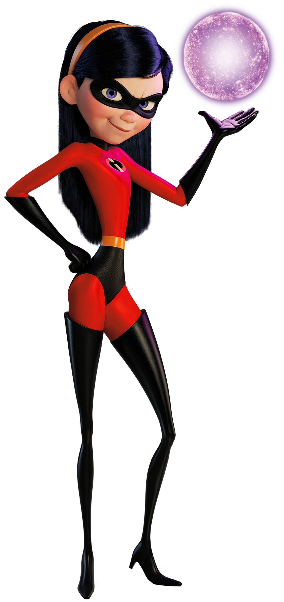

We Are Family

Mr. Inc
Name - Bob Parr
Family - Father

Elastigirl
Name - Helen Parr
Family - Mother

Violet
Name - Violet Parr
Family - Daughter
Dash
Name - Dash Parr
Family - Son
Jack-Jack
Name - Jack Parr
Family - Son
Mr.Incredible
Robert "Bob" Parr, also known as Mr. Incredible, is a fictional superhero who appears in Pixar's computer-animated superhero film The Incredibles (2004) and Incredibles 2 (2018). He is a superhero who possesses superhuman strength, durability, and stamina. He is married to Helen Parr, also known as Elastigirl, and has three children named Dash, Violet, and Jack-Jack. He is voiced by Craig T. Nelson in the films, while in Mr. Incredible and Pals and the video games, he is voiced by Pete Docter, Richard McGonagle and Jeff Bergman.He was created by writer/director, Brad Bird, and is partly based on Bird's father, with Bird stating, "He's a little bit like my dad, because my dad was a great guy, really funny and smart, and I love him dearly".

Mrs.Incredible
Helen Parr (née Truax),also known as Elastigirl and Mrs. Incredible, is a fictional superhero who appears in Pixar's computer-animated superhero film The Incredibles (2004) and its sequel Incredibles 2 (2018). Voiced by actress Holly Hunter, the character is a superhero who possesses superhuman elasticity, granting her the ability to stretch any part of her body to great proportions. Helen is introduced in the first film as an accomplished superheroine forced into retirement with the rest of her family after usage of superpowers is banned by law.
Violet
Violet Parr is a fictional character in Pixar's computer-animated superhero film The Incredibles (2004) and its sequel Incredibles 2 (2018). The eldest child of Bob and Helen Parr (Mr. Incredible and Elastigirl), Violet is born with the superhuman abilities to render herself invisible and generate force fields. Voiced by Sarah Vowell, Violet is a shy junior high school student who longs to fit in among her peers, a task she believes is hindered by her superpowers. Throughout the course of the films, Violet gradually matures and becomes more confident in herself as both a young woman and a superhero.
Dash
Dashiell "Dash" Robert Parr is a fictional character who appears in Pixar's computer-animated superhero film The Incredibles (2004) and its sequel Incredibles 2 (2018). The character is voiced by Spencer Fox in the first film and Huckleberry Milner in the second film. Restless, relentless and curious, Dash sports a hearty sense of adventure and a boundless supply of energy. Born with the remarkable power of superhuman speed, he longs to be free to use his powers at his leisure, and chafes against the admonishment by his parents, in particular his mother, that his powers must be kept a secret.
Jack
John Jackson "Jack-Jack" Parr (voiced by Eli Fucile and Maeve Andrews in the first film, Fucile and Nicholas Bird in the second film) is the Parrs' infant son, the youngest of the Parr children. Initially believed to be the only family member without any powers and shown as a minor character (as he did not join the family in the first film), he manifests a multitude of superhuman abilities at the end of the first film, most of which are types of shapeshifting, when Syndrome tries to kidnap him. More powers are seen in the short film Jack-Jack Attack on the Incredibles DVD, making his powers the most versatile of the family, and according to a collectible poster included with some Incredibles toys, still more powers are undisclosed.
Mirage
Syndrome

Omnidroid